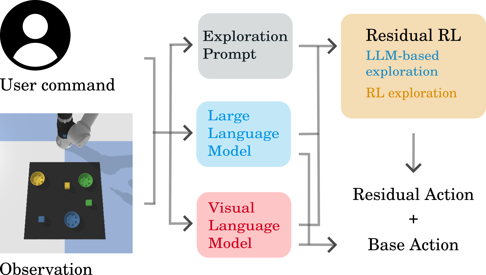

ExploRLLM
ExploRLLM is a novel methodology that integrates the advantages of reinforcement learning with knowledge from foundational models. Our approach involves a reinforcement learning agent, equipped with a residual action space and observation space derived from affordances recognized by foundation models. We leverage actions recommended by large language models to guide the exploration process, increasing the likelihood of visiting meaningful states.
For the creation of plans in robotic manipulation tasks, prior research often prompts LLMs on every step to generate plans. However, this method of frequent LLM invocation during the training phase is highly resource-intensive, incurring significant time and financial costs due to the numerous iterations required to train a single RL agent. Drawing inspiration from Code-as-Policy, our methodology employs the LLM to hierarchically generate language model programs, which are then executed iteratively during the training phase as exploratory actions, enhancing efficiency and resource utilization.